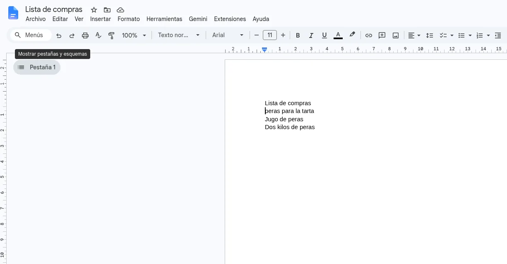
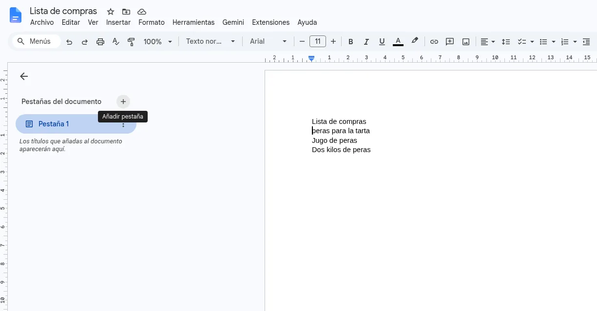
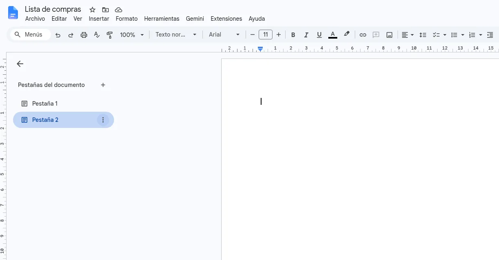
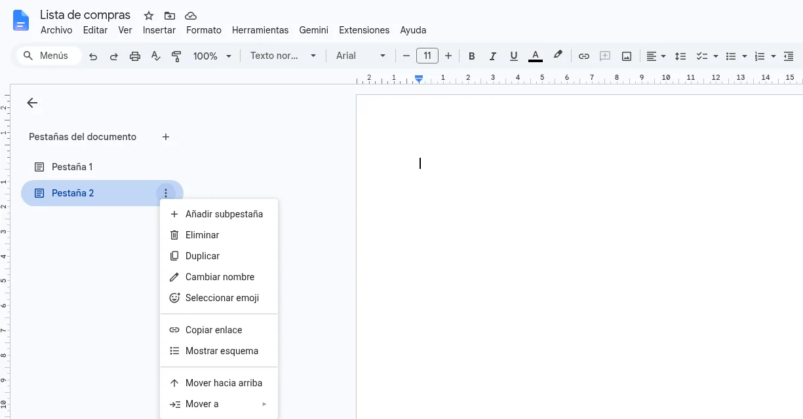
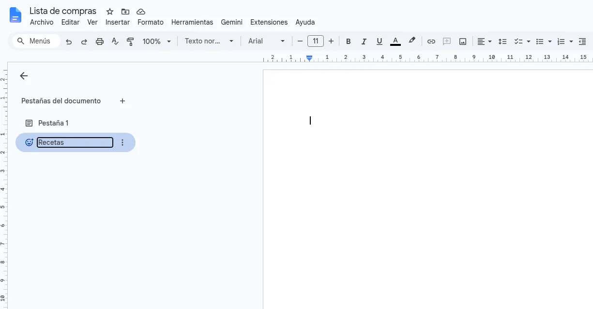
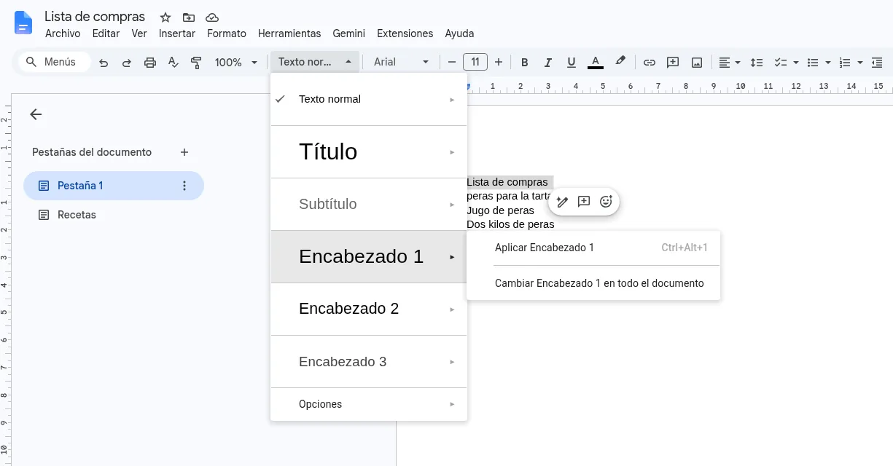
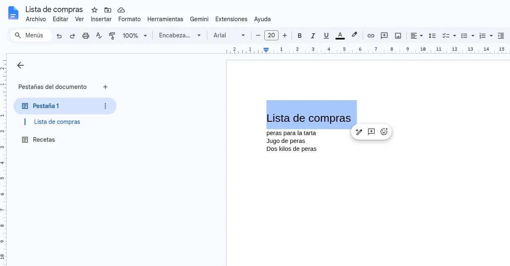
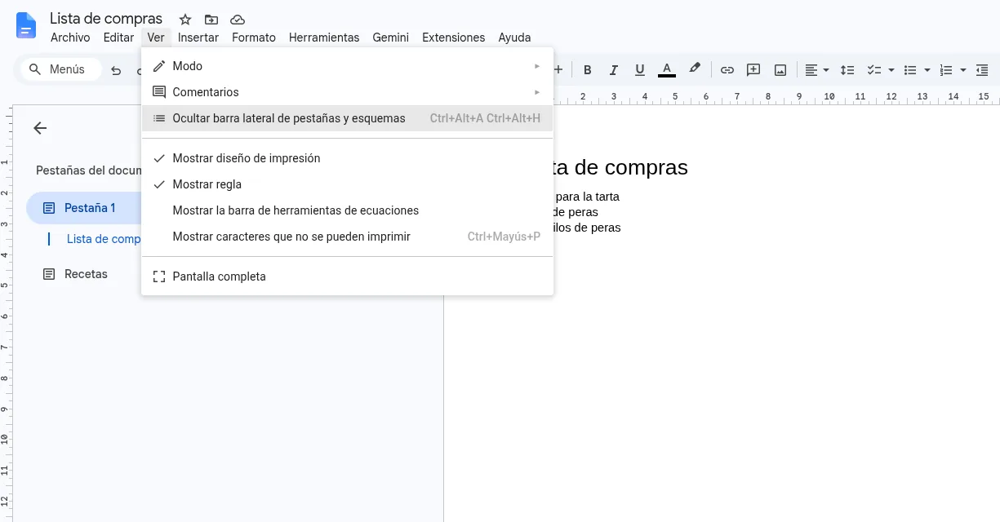
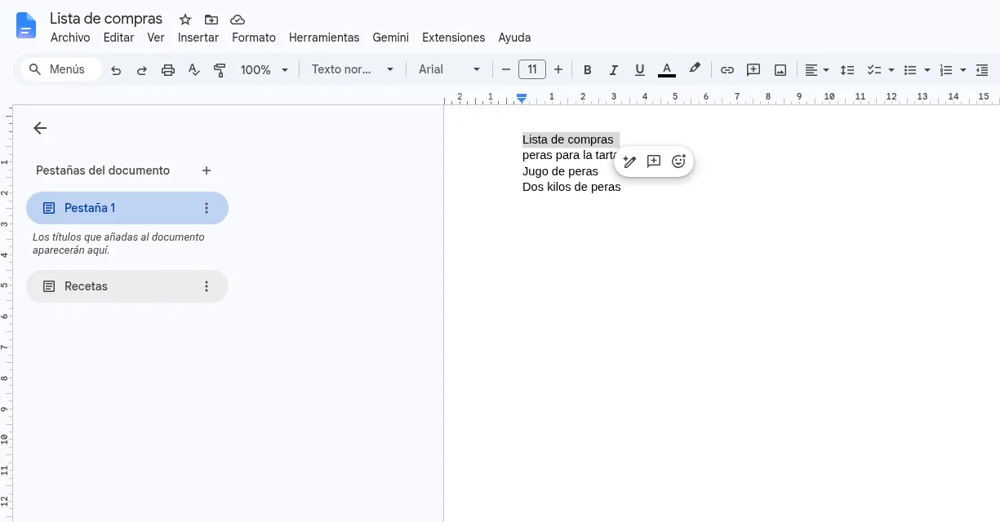

Curso de Google Documentos › Ver › Lección 15
Lección 15 de 53 · menú Ver
Pestañas y esquema en Google Docs: ordená tu documento
Fecha del video: · Programado
¿Tu Google Doc se hizo largo y te cuesta encontrar las cosas? Con las pestañas dividís el documento en partes y con el esquema saltás directo a cada título, sin desplazarte página por página.
En el ejemplo usamos el documento «Lista de compras»: abrimos el panel, creamos una pestaña, la renombramos como «Recetas», pusimos un título en el esquema y después lo dejamos todo como estaba.
Paso 1: abrí el panel «Pestañas del documento»
Arriba a la izquierda, debajo de la barra de menús, tocá el botón Mostrar pestañas y esquemas. Se abre el panel izquierdo Pestañas del documento. Todo documento nuevo trae una pestaña llamada Pestaña 1.

Paso 2: sumá una pestaña con «Añadir pestaña»
En el panel, tocá el botón +: su descripción dice Añadir pestaña. Se crea una pestaña nueva, que se llama Pestaña 2, con su página en blanco.


Paso 3: «Opciones de pestaña» y cambiar el nombre
Pasá el mouse por la pestaña y tocá los tres puntitos (⋮), Opciones de pestaña. Vas a ver Añadir subpestaña, Eliminar, Duplicar, Cambiar nombre, Seleccionar emoji, Copiar enlace, Mostrar esquema, Mover hacia arriba y Mover a.

Elegí Cambiar nombre, escribí el nombre nuevo (en el ejemplo, «Recetas») y apretá Enter.

Paso 4: armá el esquema con un estilo de encabezado
El esquema lista los encabezados del texto. Volvé a Pestaña 1, seleccioná el renglón «Lista de compras» y abrí el menú de estilos de la barra (dice «Texto normal»). Elegí Encabezado 1 (Ctrl + Alt + 1). Los subtítulos no aparecen en el esquema.

El título aparece en el panel, debajo de Pestaña 1. Hacé clic en él y el documento salta a esa parte. Si querés verlo u ocultarlo, usá Opciones de pestaña → Mostrar esquema.

Paso 5: abrí o cerrá el panel desde el menú Ver
También podés abrir y cerrar el panel desde Ver: la opción cambia según el estado, y con el panel abierto dice Ocultar barra lateral de pestañas y esquemas (Ctrl + Alt + A, Ctrl + Alt + H). Cuando está cerrado dice «Mostrar barra lateral de pestañas y esquemas».

Paso 6: cerrá el panel con la flecha
Para cerrar el panel, tocá la flecha ← de arriba a la izquierda: Ocultar pestañas y esquemas. Las pestañas y el esquema siguen ahí, solo se esconde el panel.

Tip: podés anidar pestañas con Añadir subpestaña (hasta 3 niveles), y al descargar o imprimir elegís Pestaña actual o Todas las pestañas. Fuente del esquema: Cómo ver esquemas, resúmenes, reglas y caracteres no imprimibles. Mirá también el menú Ver completo.
Mirá el Short
Estreno del Short: 28/11/2026 · 17:00 (hora Argentina)
Video relacionado: Google Docs: menú Ver paso a paso (tutorial completo) — el video largo del menú Ver (verlo en YouTube).
Fuente oficial: Ayuda de Editores de Documentos de Google. Capturas propias en un documento de ejemplo («Lista de compras»). El video usa voz generada con IA.